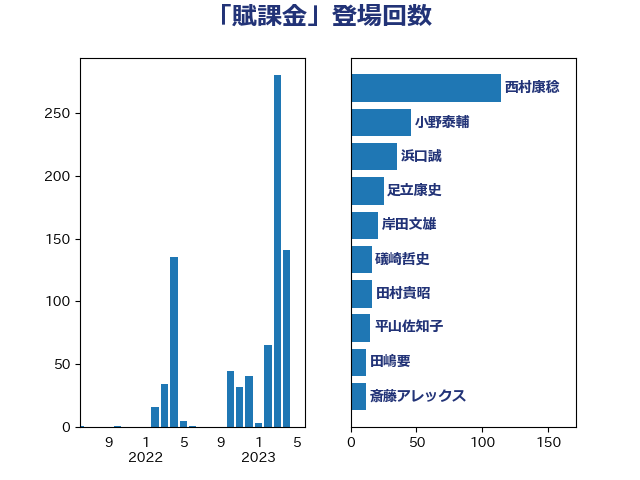

単語「賦課金」

| 西村康稔 | 自由民主党 | 114 回 |
| 小野泰輔 | 日本維新の会 | 46 回 |
| 浜口誠 | 国民民主党 | 35 回 |
| 足立康史 | 日本維新の会 | 25 回 |
| 岸田文雄 | 自由民主党 | 21 回 |
| 礒崎哲史 | 国民民主党 | 16 回 |
| 田村貴昭 | 日本共産党 | 16 回 |
| 平山佐知子 | 無所属 | 15 回 |
| 田嶋要 | 立憲民主党 | 12 回 |
| 斎藤アレックス | 国民民主党 | 12 回 |
| 階猛 | 立憲民主党 | 11 回 |
| 緑川貴士 | 立憲民主党 | 9 回 |
| 竹詰仁 | 国民民主党 | 9 回 |
| 田島麻衣子 | 立憲民主党 | 9 回 |
| 竹内真二 | 公明党 | 8 回 |
| 浅野哲 | 国民民主党 | 8 回 |
| 村田享子 | 立憲民主党 | 8 回 |
| 山岡達丸 | 立憲民主党 | 8 回 |
| 篠原孝 | 立憲民主党 | 7 回 |
| 笠井亮 | 日本共産党 | 7 回 |
| 玉木雄一郎 | 国民民主党 | 7 回 |
| 中川宏昌 | 公明党 | 7 回 |
| 鈴木俊一 | 自由民主党 | 6 回 |
| 空本誠喜 | 日本維新の会 | 6 回 |
| 福島伸享 | 無所属 | 6 回 |
| 石川博崇 | 公明党 | 6 回 |
| 石井拓 | 自由民主党 | 6 回 |
| 斉藤鉄夫 | 公明党 | 6 回 |
| 宗清皇一 | 自由民主党 | 6 回 |
| 中野洋昌 | 公明党 | 6 回 |
| 長峯誠 | 自由民主党 | 5 回 |
| 川崎ひでと | 自由民主党 | 5 回 |
| 長浜博行 | 無所属 | 4 回 |
| 猪瀬直樹 | 日本維新の会 | 4 回 |
| 木村英子 | れいわ新選組 | 4 回 |
| 山崎誠 | 立憲民主党 | 4 回 |
| 宮崎雅夫 | 自由民主党 | 4 回 |
| 伊藤孝恵 | 国民民主党 | 4 回 |
| 中川康洋 | 公明党 | 4 回 |
| 馬場雄基 | 立憲民主党 | 3 回 |
| 紙智子 | 日本共産党 | 3 回 |
| 浜野喜史 | 国民民主党 | 3 回 |
| 森本真治 | 立憲民主党 | 3 回 |
| 岩渕友 | 日本共産党 | 3 回 |
| 奥野総一郎 | 立憲民主党 | 3 回 |
| 住吉寛紀 | 日本維新の会 | 3 回 |
| 上田清司 | 国民民主党 | 3 回 |
| 阿部知子 | 立憲民主党 | 2 回 |
| 金子恵美 | 立憲民主党 | 2 回 |
| 萩生田光一 | 自由民主党 | 2 回 |
| 片山大介 | 日本維新の会 | 2 回 |
| 渡辺猛之 | 自由民主党 | 2 回 |
| 東国幹 | 自由民主党 | 2 回 |
| 山口晋 | 自由民主党 | 2 回 |
| 室井邦彦 | 日本維新の会 | 2 回 |
| 大西健介 | 立憲民主党 | 2 回 |
| 土田慎 | 自由民主党 | 2 回 |
| 和田有一朗 | 日本維新の会 | 2 回 |
| 上田英俊 | 自由民主党 | 2 回 |
| 須藤元気 | 無所属 | 1 回 |
| 青柳仁士 | 日本維新の会 | 1 回 |
| 青島健太 | 日本維新の会 | 1 回 |
| 長妻昭 | 立憲民主党 | 1 回 |
| 長友慎治 | 国民民主党 | 1 回 |
| 金城泰邦 | 公明党 | 1 回 |
| 野間健 | 立憲民主党 | 1 回 |
| 遠藤良太 | 日本維新の会 | 1 回 |
| 近藤和也 | 立憲民主党 | 1 回 |
| 越智俊之 | 自由民主党 | 1 回 |
| 赤木正幸 | 日本維新の会 | 1 回 |
| 西岡秀子 | 国民民主党 | 1 回 |
| 藤田文武 | 日本維新の会 | 1 回 |
| 若松謙維 | 公明党 | 1 回 |
| 舟山康江 | 国民民主党 | 1 回 |
| 竹内譲 | 公明党 | 1 回 |
| 石原宏高 | 自由民主党 | 1 回 |
| 漆間譲司 | 日本維新の会 | 1 回 |
| 浜田聡 | NHK党 | 1 回 |
| 横沢高徳 | 立憲民主党 | 1 回 |
| 斎藤嘉隆 | 立憲民主党 | 1 回 |
| 後藤茂之 | 自由民主党 | 1 回 |
| 小野寺五典 | 自由民主党 | 1 回 |
| 小山展弘 | 立憲民主党 | 1 回 |
| 国光あやの | 自由民主党 | 1 回 |
| 伊藤渉 | 公明党 | 1 回 |
| 中根一幸 | 自由民主党 | 1 回 |
| 世耕弘成 | 自由民主党 | 1 回 |